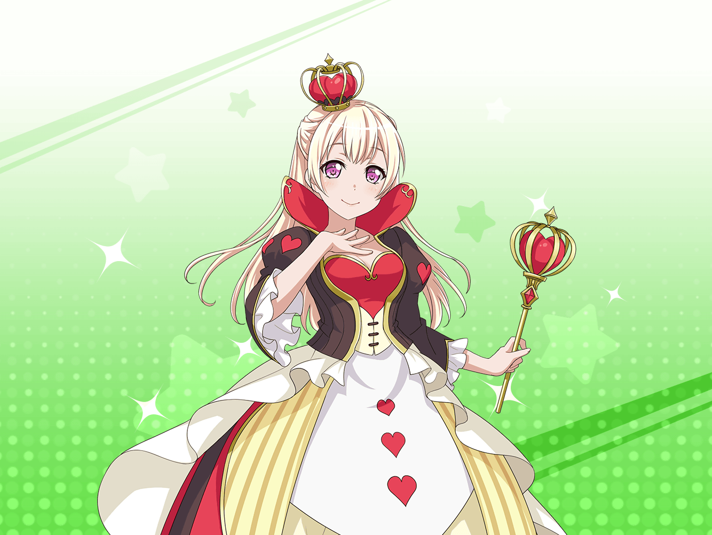
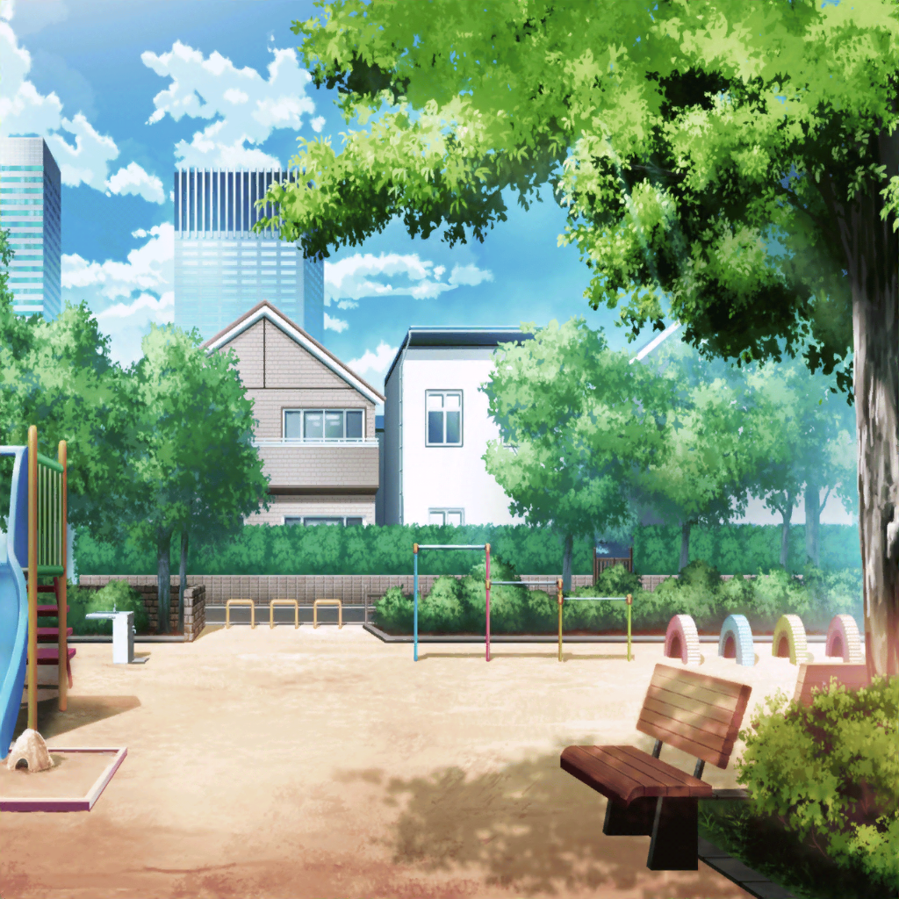

公園
千聖
ふふ、今日はいい天気ね
千聖
まさにお散歩日和だわ
千聖
……あら？
あれは、もしかして……
千聖
有咲ちゃん？
有咲
ん？
あ、白鷺先輩
千聖
こんにちは。
こんな所で会うなんて、偶然ね？
有咲
こんにちは。
そうですね。白鷺先輩も散歩ですか？
千聖
ええ。
久しぶりのお休みで、天気もよかったから
千聖
白鷺先輩も、っていうことは、
有咲ちゃんも？
有咲
はい、私もです
千聖
じゃあ、せっかくですし、
一緒にお話しながらお散歩でもどうかしら？
有咲
あ、はい。
じゃあ、えっと……よろしくお願いします
千聖
ふふ。よろしくね
千聖
そういえば、最近、Poppin'Partyのほうはどう？
有咲
みんな頑張ってますよ。
今やれる事をやってる感じで……
千聖
そうなの。有咲ちゃんも頑張っているのね
有咲
まあ……私はほどほどにって感じです
有咲
白鷺先輩の方はどうなんですか？
千聖
パスパレは……あれ？
あそこの引っかかってる風船……
有咲
風船？
……ああ、あのうさぎの形をしたやつですか
千聖
ええ、あの風船を見たら、
この間みんなでうさぎを追いかけたことを思い出したの
有咲
あー、あの時のことですね
有咲
あれは本当に大変でした……
正直、二度と追いかけまわしたくないです
千聖
ええ、思った以上に大変だったわね。
うさぎがあんなにすばしっこかったなんて思わなかったし……
有咲
ええ、そうですね……
私、あまりの速さに
途中で絶対捕まえられないと思って諦めかけましたもん
千聖
でも、有咲ちゃん、口では文句を言いながらも
最後まで諦めずに手伝っていたじゃない
有咲
そ、そうでしたっけ？
ちょっと覚えてないかなー……
千聖
そうよ。
一番現実的な案を出したのも有咲ちゃんだったし
有咲
現実的な案？
……あぁ、餌で釣るってやつですか？
千聖
ええ。
出た意見の中で一番現実的で効率的だったと思うわ
千聖
実際、あの案のおかげで、
うさぎを捕まえられたわけだし
有咲
…………
有咲
白鷺先輩……なんでさっきから私のこと、
褒め殺してるんですか？
千聖
褒め殺し？
私は思ってたことを言ったつもりで……
有咲
あーあー、わ、わかりましたっ。
もういいです！
この話はこれ以上やめましょうっ
千聖
ふふ、わかったわ。
じゃあ、話題を変えて……
千聖
有咲ちゃんはうさぎを触ってみて
どうだった？
有咲
そうですね。
思ってたより軽くて、柔らかったし……
まあ、気持ちいいなとは思いましたよ
有咲
白鷺先輩はどう思ったんですか？
千聖
私も有咲ちゃんと同じ
千聖
今まで、うさぎをあまり触ったことがなかったけれど、
あんなにモフモフして触り心地がよかったんだなぁって
思ったわ
千聖
あんなに気持ちいいなら、
今度、また触りたいくらい
有咲
まあ、そうですね……
ほんとーにヒマがあったら、そうしたいかもです
千聖
ふふ、じゃあ、その時は一緒に触りに行きましょう♪
有咲
（白鷺先輩って、なーんか怖いんだよな……）